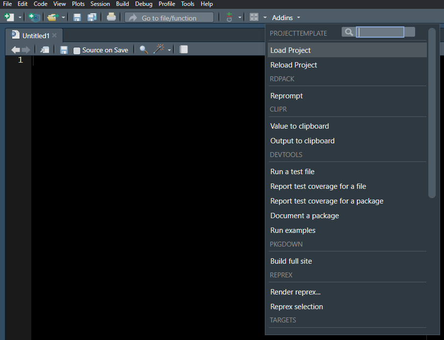

library(thekidsbiostats) # install with remotes::install_github("The-Kids-Biostats/thekidsbiostats", build_vignettes = TRUE)Overview
RStudio addins are a useful (and likely underutilised) feature that allow users to execute various pre-set R commands with a simple click from a drop down menu. They can take many forms—allowing users to run a function, automate repetitive tasks, insert a snippet of text or code, or launch an interactive GUI (e.g., Shiny application). Addins are a component of packages (from a development and installation perspective); any package may have any number of addins.
As the number of packages you have installed grows, so too does the number of addins in your drop down menu, especially since addins are available even when their corresponding package is not loaded. Inevitably, the number of addins we are unlikely to use regularly (if at all!) grows, leading to unnecessary scrolling to find the ones we want.
Addins within RStudio
Addins are accessed in the top toolbar in RStudio. Figure 1 shows the (long) list of addins offered by various packages—most of which, we suspect, will not regularly (or ever) be used by the average user.

The usecase for rsam
Despite this, RStudio offers no in-built functionalities to manage this list. That is where the rsam package comes in handy—a relatively old and little-known package enabling users to curate their addins list, meaning you can trim the drop down menu to include only those addins you intend to use. In doing so, addins will become more readily available (easier to find) meaning they can be more efficiently incorporated into your workflow.
For the Biostatistics team at The Kids Research Institute Australia, we have a number of addins in our package to automate routine elements of our workflows. Therefore, we preference having these addins readily accessible.
This post will walk through:
- Installation of the package, and
- Managing addins using the
rsaminterface.
Step 1: rsam installation and setup
rsam is hosted only on Github and can be installed easily using the remotes package.
The package code hasn’t actually changed or been updated for 8 years, at the time of writing.
remotes::install_github(repo = "yonicd/rsam")Loading the Package
Now we can load the package:
library(rsam)Upon loading, we must explicitly allow the package to write to disk. We feel you can safely accept both of these request, acknowledging this is a personal choice to be made.
These numeric values (and labels) swap around each time the package is loaded. This stops the user from simply parsing over the permissions each time without actively reading them!
While the dropdown menu shows us a list of the available addins, we can use the fetch_addins function from rsam to view these in a table format alongside some additional information about their functionality.
fetch_addins() %>%
thekids_table()Package | Name | Description | Binding | Interactive | Key | libpath | Shortcut |
|---|---|---|---|---|---|---|---|
clipr | Value to clipboard | Copies the results of a selected expression to the system clipboard | clipr_result | false | clipr::clipr_result | C:/Users/zdempsey/AppData/Local/R/win-library/4.4/clipr/rstudio/_addins.dcf | |
clipr | Output to clipboard | Copies the console output of a selected expression to the system clipboard | clipr_output | false | clipr::clipr_output | C:/Users/zdempsey/AppData/Local/R/win-library/4.4/clipr/rstudio/_addins.dcf | |
devtools | Run a test file | Run the current test file, using `devtools::test_active_file()`. | test_active_file | true | devtools::test_active_file | C:/Users/zdempsey/AppData/Local/R/win-library/4.4/devtools/rstudio/_addins.dcf | |
devtools | Report test coverage for a file | Calculate and report test coverage for the current test file, using `devtools::test_coverage_active_file()`. | test_coverage_active_file | true | devtools::test_coverage_active_file | C:/Users/zdempsey/AppData/Local/R/win-library/4.4/devtools/rstudio/_addins.dcf | |
devtools | Report test coverage for a package | Calculate and report the test coverage for the current package, using `devtools::test_coverage()`. | test_coverage | true | devtools::test_coverage | C:/Users/zdempsey/AppData/Local/R/win-library/4.4/devtools/rstudio/_addins.dcf | |
devtools | Document a package | A wrapper for `roxygen`'s `roxygen2::roxygenize()` | document | true | devtools::document | C:/Users/zdempsey/AppData/Local/R/win-library/4.4/devtools/rstudio/_addins.dcf | |
devtools | Run examples | Runs R code in examples using `devtools::run_examples()` | run_examples | true | devtools::run_examples | C:/Users/zdempsey/AppData/Local/R/win-library/4.4/devtools/rstudio/_addins.dcf | |
pkgdown | Build full site | Build website for current package | build_site | true | pkgdown::build_site | C:/Users/zdempsey/AppData/Local/R/win-library/4.4/pkgdown/rstudio/_addins.dcf | |
ProjectTemplate | Load Project | Load data and packages in the project. | loadproject_addin | false | ProjectTemplate::loadproject_addin | C:/Users/zdempsey/AppData/Local/R/win-library/4.4/ProjectTemplate/rstudio/_addins.dcf | |
ProjectTemplate | Reload Project | Clear the global environment and reload the project. | reloadproject_addin | false | ProjectTemplate::reloadproject_addin | C:/Users/zdempsey/AppData/Local/R/win-library/4.4/ProjectTemplate/rstudio/_addins.dcf | |
Rdpack | Reprompt | Updates Rd file based on editor contents | RStudio_reprompt | false | Rdpack::RStudio_reprompt | C:/Users/zdempsey/AppData/Local/R/win-library/4.4/Rdpack/rstudio/_addins.dcf | |
reprex | Render reprex... | Run `reprex::reprex()` to prepare a reproducible example for sharing. | reprex_addin | true | reprex::reprex_addin | C:/Users/zdempsey/AppData/Local/R/win-library/4.4/reprex/rstudio/_addins.dcf | |
reprex | Reprex selection | Prepare reprex from current selection | reprex_selection | false | reprex::reprex_selection | C:/Users/zdempsey/AppData/Local/R/win-library/4.4/reprex/rstudio/_addins.dcf | |
rhandsontable | Edit a Data Frame | Interactively edit a data frame. | editAddin | true | rhandsontable::editAddin | C:/Users/zdempsey/AppData/Local/R/win-library/4.4/rhandsontable/rstudio/_addins.dcf | |
rsam | lla1 | Wrap any global objects in rsam_fn_1() and use this addin to run them. | lla1 | true | rsam::lla1 | C:/Users/zdempsey/AppData/Local/R/win-library/4.4/rsam/rstudio/_addins.dcf | |
rsam | lla2 | Wrap any global objects in rsam_fn_2() and use this addin to run them. | lla2 | true | rsam::lla2 | C:/Users/zdempsey/AppData/Local/R/win-library/4.4/rsam/rstudio/_addins.dcf | |
rsam | lla3 | Wrap any global objects in rsam_fn_3() and use this addin to run them. | lla3 | true | rsam::lla3 | C:/Users/zdempsey/AppData/Local/R/win-library/4.4/rsam/rstudio/_addins.dcf | |
targets | Edit _targets.R | Open the file _targets.R for editing. Requires the usethis package. | tar_edit | false | targets::tar_edit | C:/Users/zdempsey/AppData/Local/R/win-library/4.4/targets/rstudio/_addins.dcf | |
targets | Run a targets pipeline in the foreground | Calls tar_make() in the current R process. Requires a _targets.R configuration file. | tar_make | false | targets::tar_make | C:/Users/zdempsey/AppData/Local/R/win-library/4.4/targets/rstudio/_addins.dcf | |
targets | Run a targets pipeline in the background | Calls tar_make() in a background process. Requires a _targets.R configuration file. | rstudio_addin_tar_make_bg | false | targets::rstudio_addin_tar_make_bg | C:/Users/zdempsey/AppData/Local/R/win-library/4.4/targets/rstudio/_addins.dcf | |
targets | Launch app to watch progress | Calls tar_watch(). Requires a _targets.R file and packages bslib, pingr, shiny, and visNetwork. | tar_watch | false | targets::tar_watch | C:/Users/zdempsey/AppData/Local/R/win-library/4.4/targets/rstudio/_addins.dcf | |
targets | Visualize a targets pipeline | Calls tar_visnetwork(). Requires a _targets.R configuration file and the visNetwork package. | rstudio_addin_tar_visnetwork | false | targets::rstudio_addin_tar_visnetwork | C:/Users/zdempsey/AppData/Local/R/win-library/4.4/targets/rstudio/_addins.dcf | |
targets | Glimpse a targets pipeline | Calls tar_glimpse(). Requires a _targets.R configuration file and the visNetwork package. | rstudio_addin_tar_glimpse | false | targets::rstudio_addin_tar_glimpse | C:/Users/zdempsey/AppData/Local/R/win-library/4.4/targets/rstudio/_addins.dcf | |
targets | See outdated targets | Calls tar_outdated(). Requries a _targets.R configuration file | rstudio_addin_tar_outdated | false | targets::rstudio_addin_tar_outdated | C:/Users/zdempsey/AppData/Local/R/win-library/4.4/targets/rstudio/_addins.dcf | |
targets | Print recent progress | Run tar_progress() and print the tail() of the result. | rstudio_addin_tar_progress | false | targets::rstudio_addin_tar_progress | C:/Users/zdempsey/AppData/Local/R/win-library/4.4/targets/rstudio/_addins.dcf | |
targets | Load target at cursor | Load the target identified by the symbol at the cursor position from the _targets data store. | rstudio_addin_tar_load | false | targets::rstudio_addin_tar_load | C:/Users/zdempsey/AppData/Local/R/win-library/4.4/targets/rstudio/_addins.dcf | |
targets | Read target at cursor | Read the target identified by the symbol at the cursor position from the _targets data store. | rstudio_addin_tar_read | false | targets::rstudio_addin_tar_read | C:/Users/zdempsey/AppData/Local/R/win-library/4.4/targets/rstudio/_addins.dcf | |
targets | Write target at cursor | Write tar_target() at the cursor position. | rstudio_addin_tar_target | false | targets::rstudio_addin_tar_target | C:/Users/zdempsey/AppData/Local/R/win-library/4.4/targets/rstudio/_addins.dcf | |
thekidsbiostats | Insert Callout | Inserts a Quarto callout at the current cursor position. | insert_callout | true | thekidsbiostats::insert_callout | C:/Users/zdempsey/AppData/Local/R/win-library/4.4/thekidsbiostats/rstudio/_addins.dcf | |
thekidsbiostats | Insert Margin Comment | Inserts a Quarto margin comment at the current cursor position. | insert_margin | true | thekidsbiostats::insert_margin | C:/Users/zdempsey/AppData/Local/R/win-library/4.4/thekidsbiostats/rstudio/_addins.dcf | |
thekidsbiostats | Create Project (Shiny) | Launch a Shiny app to create a new project with a structured directory. | create_project_addin | true | thekidsbiostats::create_project_addin | C:/Users/zdempsey/AppData/Local/R/win-library/4.4/thekidsbiostats/rstudio/_addins.dcf | |
thekidsbiostats | Insert Model Panel Tabset | Insert Quarto tabset for model output with optional explanations | insert_model_tabset | true | thekidsbiostats::insert_model_tabset | C:/Users/zdempsey/AppData/Local/R/win-library/4.4/thekidsbiostats/rstudio/_addins.dcf |
Step 2: Managing your addins
Now, we call rsam(). This opens a Shiny app in the Viewer pane, where we can simply “tick” the addins we wish to preserve, and then click “Update”.
rsam()Result
Now, back in the addins toolbar in RStudio, we can see only the ones we selected (I chose to preserve only the targets and thekidsbiostats addins).
Closing comments
Using the rsam package, we can manage and personalise the addins we see in RStudio—preferencing those we routinely use and masking those we do not. In doing so, we can have the addins we want at our fingertips to more easily and efficiently incorporate those addins into our everyday workflows.
Acknowledgements
Thanks to Wesley Billingham, Dr Robin Cook and Dr Elizabeth McKinnon for providing feedback on and reviewing this post.
Reproducibility Information
To access the .qmd (Quarto markdown) files as well as any R scripts or data that was used in this post, please visit our GitHub:
https://github.com/The-Kids-Biostats/The-Kids-Biostats.github.io/tree/main/posts/
The session information can also be seen below.
Code
sessionInfo()R version 4.4.1 (2024-06-14 ucrt)
Platform: x86_64-w64-mingw32/x64
Running under: Windows 10 x64 (build 19045)
Matrix products: default
locale:
[1] LC_COLLATE=English_Australia.utf8 LC_CTYPE=English_Australia.utf8
[3] LC_MONETARY=English_Australia.utf8 LC_NUMERIC=C
[5] LC_TIME=English_Australia.utf8
time zone: Australia/Sydney
tzcode source: internal
attached base packages:
[1] stats graphics grDevices utils datasets methods base
other attached packages:
[1] thekidsbiostats_0.0.2 flextable_0.9.7 gtsummary_2.1.0
[4] lubridate_1.9.4 forcats_1.0.0 stringr_1.5.1
[7] dplyr_1.1.4 purrr_1.0.4 readr_2.1.5
[10] tidyr_1.3.1 tibble_3.2.1 ggplot2_3.5.2
[13] tidyverse_2.0.0 extrafont_0.19
loaded via a namespace (and not attached):
[1] gtable_0.3.6 xfun_0.52 htmlwidgets_1.6.4
[4] tzdb_0.5.0 vctrs_0.6.5 tools_4.4.1
[7] generics_0.1.3 pkgconfig_2.0.3 data.table_1.17.0
[10] uuid_1.2-1 lifecycle_1.0.4 farver_2.1.2
[13] compiler_4.4.1 textshaping_1.0.0 munsell_0.5.1
[16] janitor_2.2.1 snakecase_0.11.1 httpuv_1.6.15
[19] fontquiver_0.2.1 fontLiberation_0.1.0 htmltools_0.5.8.1
[22] yaml_2.3.10 Rttf2pt1_1.3.12 pillar_1.10.2
[25] later_1.4.2 extrafontdb_1.0 openssl_2.3.2
[28] mime_0.13 fontBitstreamVera_0.1.1 tidyselect_1.2.1
[31] zip_2.3.2 digest_0.6.37 stringi_1.8.7
[34] labelled_2.14.0 fastmap_1.2.0 grid_4.4.1
[37] colorspace_2.1-1 cli_3.6.4 magrittr_2.0.3
[40] patchwork_1.3.0 withr_3.0.2 gdtools_0.4.2
[43] scales_1.3.0 promises_1.3.2 timechange_0.3.0
[46] rmarkdown_2.29 officer_0.6.8 askpass_1.2.1
[49] ragg_1.3.3 hms_1.1.3 shiny_1.10.0
[52] evaluate_1.0.3 haven_2.5.4 knitr_1.50
[55] rlang_1.1.5 Rcpp_1.0.14 xtable_1.8-4
[58] glue_1.8.0 xml2_1.3.8 rstudioapi_0.17.1
[61] jsonlite_2.0.0 R6_2.6.1 systemfonts_1.2.2
[64] fs_1.6.5 shinyFiles_0.9.3